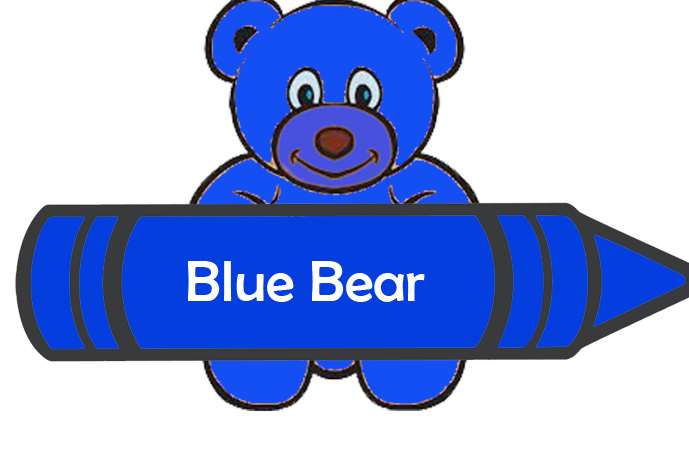

When he was 6 years old he had heart surgery and before the surgery
he was next to a kid and they were both in a seperate bed. The kid
had a bunch of crayola bears his family got him. To make him feel
better he gave him a blue stuffed crayola bear.

Around the age of 21 he had a second heart surgery.
Before his second surgery his family and friends all brought stuffed animals.
His friends even brought him more crayola bear stuffed bears to joke around.